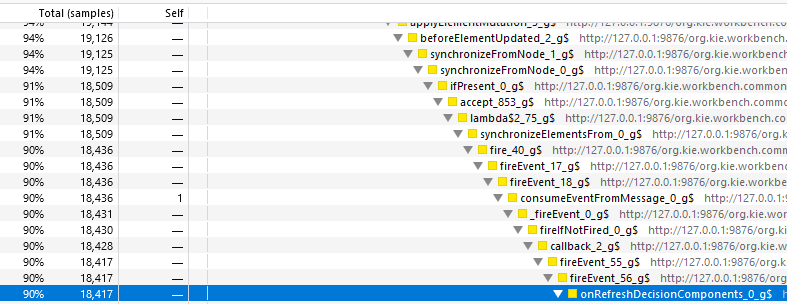
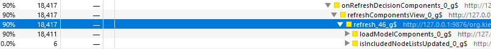
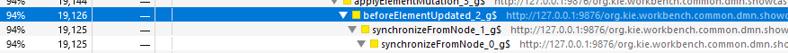

Profiling to improve DMN file’s loading time: Final Part
In the first post of this series, we saw about what is profiling, profiling GWT and started to analyze a DMN file case which took too much time to load in the editor. In this second and final part of the post, we will explore the snapshot collected by the Profiling Tool and do the proper changes in the DMN Editor to fix the bottlenecks.
Analyzing The Profiling Snapshot
With everything set, we ran the profiling tool again and take another snapshot. Here is the result we got:
As we can see, the "hot path" is expanded and now readable by a human being. Unfortunately, the source map is not supported by Firefox Profiling Tool in this scenario, the tool we used to profile, so we can’t see exactly in our code where those methods are being called but having the real name and call stack it is not hard to understand what is happening and where those methods are.
So we can navigate through the call stack expanding the calls. The key here is to follow the path of the left column.
The profiling tool takes samples of the running code from time to time and sees what is being run each time it takes that sample.
It is like calling your kid every minute for 10 minutes and taking a note about what he is doing. If 9 times he said that he is playing a game and one time he said that he is checking social networks, you can say that 90% of the time he is playing games.
That’s what Profiler did here. He is saying that our kid is 90% of the time calling "onRefreshDecisionComponents" that is being called by "fireEvent" which is being called by "callback" and so on:

If we go deeper in the stack, we can see exactly what "onRefreshDecisionComponents" means:

"loadModelComponents".
So, the model components are being loaded every time the event "onRefreshDecisionComponents" are fired.
Why that event is being fired so many times?
We go up the call stack:

There is. "beforeElementUpdate". It means that every time an element is updated, the "onRefreshDecisionComponents" is fired, probably to keep synchronized the Decision Components Navigator and the elements.
But why is taking so much time? Do we need to call it at this moment?
The Solution
So to understand how "beforeElementUpdated" is being called, I just put a break point here and run the same process again, but now not profiling, just debugging, to find out what was happening there.
What I found out was quite obvious and maybe you already got it without the need of debug:
"beforeElementUpdate" was being called for each element of our big DMN File. That means that if we have 1000 nodes in the DMN file, in the end, the Decision Components Navigator will be updated 1000 times!
Why do we need to update the Decision Components Navigator 1000 and not the only one after every node is loaded?
I did a simple change: before loading, the file, just suspend the Decision Components Node update and after the file is fully loaded I call it once.
Before this simple change, the file was taking 3:53 minutes to be loaded. Now it is being loaded in 33 seconds just because we update the user interface when the file is fully loaded. We also keep the previous behavior that updates the interface when a single node is changed, so none of the features is lost.
If we rerun the profile, we will see that the "onRefreshDecisionComponents" is not even being shown by the Profiler again!
Conclusion
Sometimes improving performance is just a matter of a simple change that is not very obvious and the Profiling Tools can be very helpful in those cases. A few minutes of profiling and changing the code deliveries to our users had a very big performance impact. Less time waiting to load the file is more time to do the real work and to check if your kid is spending too much time in gaming and social media.

{kind=link}